Clase 8 Redes neuronales (parte 2)
En esta parte veremos aspectos más modernos de redes neuronales (incluyendo aprendizaje profundo). Estoy incluye métodos de ajuste, regularización, y definición de activaciones.
8.1 Descenso estocástico
El algoritmo más popular para ajustar redes grandes es descenso estocástico, que es una modificación de nuestro algoritmo de descenso en gradiente. Antes de presentar las razones para usarlo, veremos cómo funciona para problemas con regresión lineal o logística.
En descenso estocástico, el cálculo del gradiente se hace sobre una submuestra relativamente chica de la muestra de entrenamiento. En este contexto, a esta submuestra se le llama un minilote. En cada iteración, nos movemos en la dirección de descenso de ese minilote.
La muestra de entrenamiento se divide entonces (al azar) en minilotes, y recorremos todos los minilotes haciendo una actualización de nuestros parámetros en cada minilote. Un recorrido sobre todos los minilotes se llama una época (las iteraciones se entienden sobre los minilotes).Antes de escribir el algoritmo mostramos una implementación para regresión logística. Usamos las mismas funciones para calcular devianza y gradiente.
library(dplyr)
library(tidyr)
library(ggplot2)
h <- function(x){1/(1+exp(-x))}
# la devianza es la misma
devianza_calc <- function(x, y){
dev_fun <- function(beta){
p_beta <- h(as.matrix(cbind(1, x)) %*% beta)
-2*mean(y*log(p_beta) + (1-y)*log(1-p_beta))
}
dev_fun
}
# el cálculo del gradiente es el mismo, pero x_ent y y_ent serán diferentes
grad_calc <- function(x_ent, y_ent){
salida_grad <- function(beta){
p_beta <- h(as.matrix(cbind(1, x_ent)) %*% beta)
e <- y_ent - p_beta
grad_out <- -2*as.numeric(t(cbind(1,x_ent)) %*% e)/nrow(x_ent)
names(grad_out) <- c('Intercept', colnames(x_ent))
grad_out
}
salida_grad
}Y comparamos los dos algoritmos:
descenso <- function(n, z_0, eta, h_deriv){
z <- matrix(0,n, length(z_0))
z[1, ] <- z_0
for(i in 1:(n-1)){
z[i+1, ] <- z[i, ] - eta * h_deriv(z[i, ])
}
z
}
# esta implementación es solo para este ejemplo:
descenso_estocástico <- function(n_epocas, z_0, eta, minilotes){
#minilotes es una lista
m <- length(minilotes)
z <- matrix(0, m*n_epocas, length(z_0))
z[1, ] <- z_0
for(i in 1:(m*n_epocas-1)){
k <- i %% m + 1
if(i %% m == 0){
#comenzar nueva época y reordenar minilotes al azar
minilotes <- minilotes[sample(1:m, m)]
}
h_deriv <- grad_calc(minilotes[[k]]$x, minilotes[[k]]$y)
z[i+1, ] <- z[i, ] - eta * h_deriv(z[i, ])
}
z
}Usaremos el ejemplo simulado de regresión para hacer algunos experimentos:
p_1 <- function(x){
ifelse(x < 30, 0.9, 0.9 - 0.007 * (x - 15))
}
set.seed(143)
sim_datos <- function(n){
x <- pmin(rexp(n, 1/30), 100)
probs <- p_1(x)
g <- rbinom(length(x), 1, probs)
# con dos variables de ruido:
dat <- data_frame(x_1 = (x - mean(x))/sd(x),
x_2 = rnorm(length(x),0,1),
x_3 = rnorm(length(x),0,1),
p_1 = probs, g )
dat %>% select(x_1, x_2, x_3, g)
}
dat_ent <- sim_datos(100)
dat_valid <- sim_datos(1000)
glm(g ~ x_1 + x_2+ x_3 , data = dat_ent, family = 'binomial') %>% coef## (Intercept) x_1 x_2 x_3
## 1.8082362 -0.7439627 0.2172971 0.3711973Hacemos descenso en gradiente:
iteraciones_descenso <- descenso(300, rep(0,4), 0.8,
h_deriv = grad_calc(x_ent = as.matrix(dat_ent[,c('x_1','x_2','x_3'), drop =FALSE]),
y_ent=dat_ent$g)) %>%
data.frame %>% rename(beta_1 = X2, beta_2 = X3)
ggplot(iteraciones_descenso, aes(x=beta_1, y=beta_2)) + geom_point()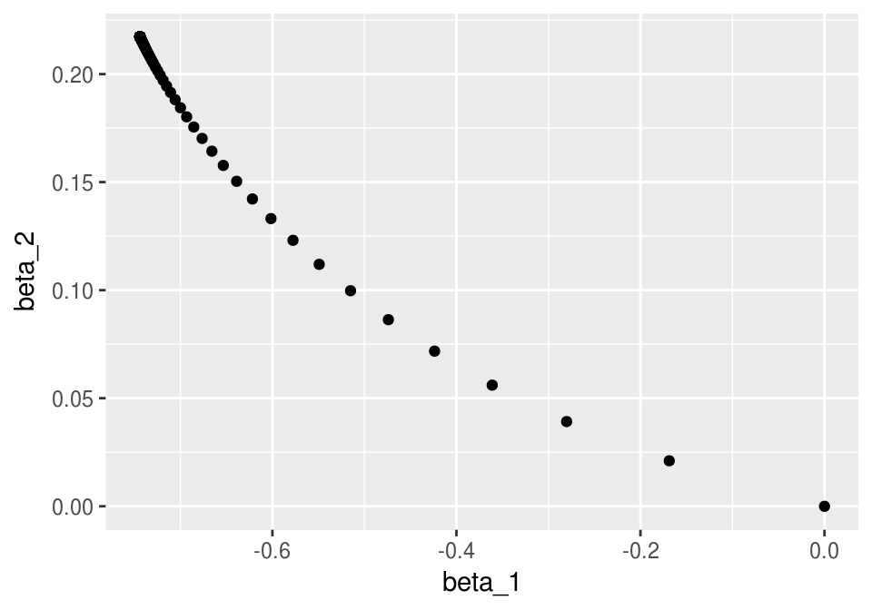
Y ahora hacemos descenso estocástico. Vamos a hacer minilotes de tamaño 5:
dat_ent$minilote <- rep(1:10, each=5)
split_ml <- split(dat_ent %>% sample_n(nrow(dat_ent)), dat_ent$minilote)
minilotes <- lapply(split_ml, function(dat_ml){
list(x = as.matrix(dat_ml[, c('x_1','x_2','x_3'), drop=FALSE]),
y = dat_ml$g)
})
length(minilotes)## [1] 10Ahora iteramos. Nótese cómo descenso en gradiente tiene un patrón aleatorio de avance hacia el mínimo, y una vez que llega a una región oscila alrededor de este mínimo.
iter_estocastico <- descenso_estocástico(30, rep(0, 4), 0.1, minilotes) %>%
data.frame %>% rename(beta_0 = X1, beta_1 = X2, beta_2 = X3)
ggplot(iteraciones_descenso, aes(x=beta_1, y=beta_2)) + geom_path() +
geom_point() +
geom_path(data = iter_estocastico, colour ='red', alpha=0.5) +
geom_point(data = iter_estocastico, colour ='red', alpha=0.5)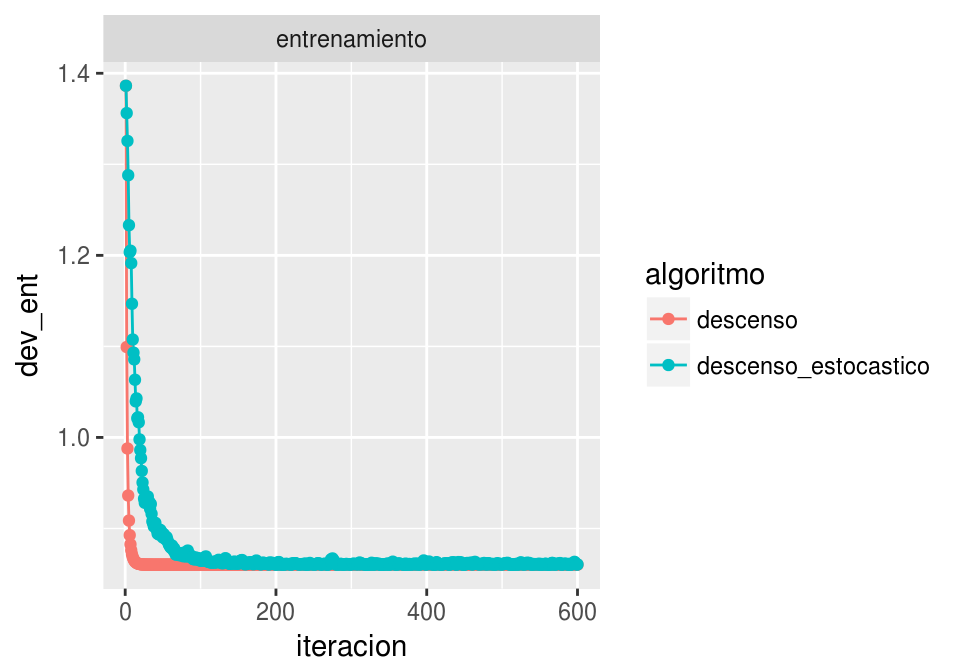
Podemos ver cómo se ve la devianza de entrenamiento:
dev_ent <- devianza_calc(x = as.matrix(dat_ent[,c('x_1','x_2','x_3'), drop =FALSE]),
y=dat_ent$g)
dev_valid <- devianza_calc(x = as.matrix(dat_valid[,c('x_1','x_2','x_3'), drop =FALSE]),
y=dat_valid$g)
dat_dev <- data_frame(iteracion = 1:nrow(iteraciones_descenso)) %>%
mutate(descenso = apply(iteraciones_descenso, 1, dev_ent),
descenso_estocastico = apply(iter_estocastico, 1, dev_ent)) %>%
gather(algoritmo, dev_ent, -iteracion) %>% mutate(tipo ='entrenamiento')
dat_dev_valid <- data_frame(iteracion = 1:nrow(iteraciones_descenso)) %>%
mutate(descenso = apply(iteraciones_descenso, 1, dev_valid),
descenso_estocastico = apply(iter_estocastico, 1, dev_valid)) %>%
gather(algoritmo, dev_ent, -iteracion) %>% mutate(tipo ='validación')
dat_dev <- bind_rows(dat_dev, dat_dev_valid)
ggplot(filter(dat_dev, tipo=='entrenamiento'),
aes(x=iteracion, y=dev_ent, colour=algoritmo)) + geom_line() +
geom_point() + facet_wrap(~tipo)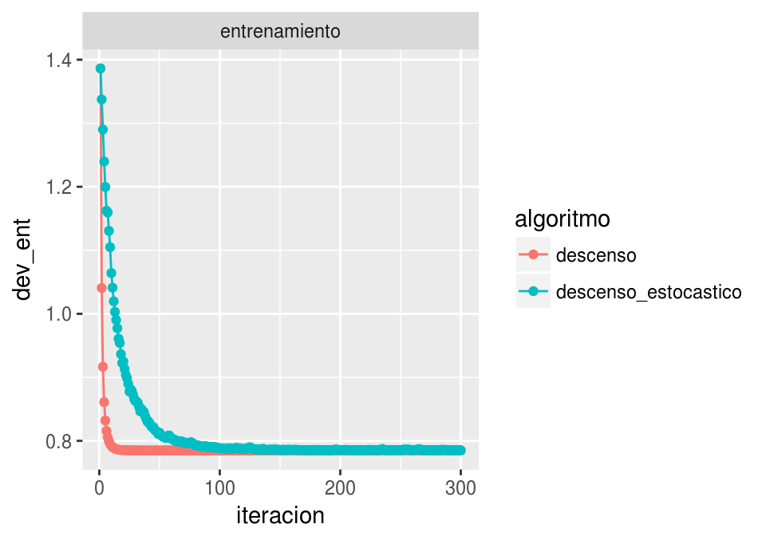
y vemos que descenso estocástico también converge a una buena solución.
8.2 Algoritmo de descenso estocástico
Descenso estocástico. Separamos al azar los datos de entrenamiento en \(n\) minilotes de tamaño \(m\).
- Para épocas \(e =1,2,\ldots, n_e\)
- Calcular el gradiente sobre el minilote y hacer actualización, sucesivamente para cada uno de los minilotes \(k=1,2,\ldots, n/m\): \[\beta_{i+1} = \beta_{i} - \eta\sum_{j=1}^m \nabla D^{(k)}_j (\beta_i)\] donde \(D^{(k)}_j (\beta_i)\) es la devianza para el \(j\)-ésimo caso del minilote \(k\).
- Repetir para la siguiente época (opcional: reordenar antes al azar los minibatches, para evitar ciclos).
8.3 ¿Por qué usar descenso estocástico por minilotes?
Las propiedades importantes de descenso estocástico son:
Muchas veces no es necesario usar todos los datos para encontrar una buena dirección de descenso. Podemos ver la dirección de descenso en gradiente como un valor esperado sobre la muestra de entrenamiento (pues la pérdida es un promedio sobre el conjunto de entrenamiento). Una submuestra (minilote) puede ser suficiente para estimar ese valor esperado, con costo menor de cómputo. Adicionalmente, quizá no es tan buena idea intentar estimar el gradiente con la mejor precisión pues es solamente una dirección de descenso local (así que quizá no da la mejor decisión de a dónde moverse en cada punto). Es mejor hacer iteraciones más rápidas con direcciones estimadas.
Desde este punto de vista, calcular el gradiente completo para descenso en gradiente es computacionalmente ineficiente. Si el conjunto de entrenamiento es masivo, descenso en gradiente no es factible.
¿Cuál es el mejor tamaño de minilote? Por un lado, minilotes más grandes nos dan mejores eficiencias en paralelización (multiplicación de matrices), especialmente en GPUs. Por otro lado, con minilotes más grandes puede ser que hagamos trabajo de más, por las razones expuestas en los incisos anteriores, y tengamos menos iteraciones en el mismo tiempo. El mejor punto está entre minilotes demasiado chicos (no aprovechamos paralelismo) o demasiado grande (hacemos demasiado trabajo por iteración).Tamaño t
4.La propiedad más importante de descenso estocástico en minilotes es entonces que su convergencia no depende del tamaño del conjunto de entrenamiento, es decir, el tiempo de iteración para descenso estocástico no crece con el número de casos totales. Podemos tener obtener buenos ajustes incluso con tamaños muy grandes de conjuntos de entrenamiento (por ejemplo, antes de procesar todos los datos de entrenamiento). Descenso estocástico escala bien en este sentido: el factor limitante es el tamaño de minilote y el número de iteraciones.
- Es importante permutar al azar los datos antes de hacer los minibatches, pues órdenes naturales en los datos pueden afectar la convergencia. Se ha observado también que permutar los minibatches en cada iteración típicamente acelera la convergencia (si se pueden tener los datos en memoria).
Ejemplo
En el ejemplo anterior nota que las direcciones de descenso de descenso estocástico son muy razonables (punto 1). Nota también que obtenemos una buena aproximación a la solución con menos cómputo (punto 2 - mismo número de iteraciones, pero cada iteración con un minilote).
ggplot(filter(dat_dev, iteracion >= 1),
aes(x=iteracion, y=dev_ent, colour=algoritmo)) + geom_line() +
geom_point(size=0.5)+
facet_wrap(~tipo, ncol=1)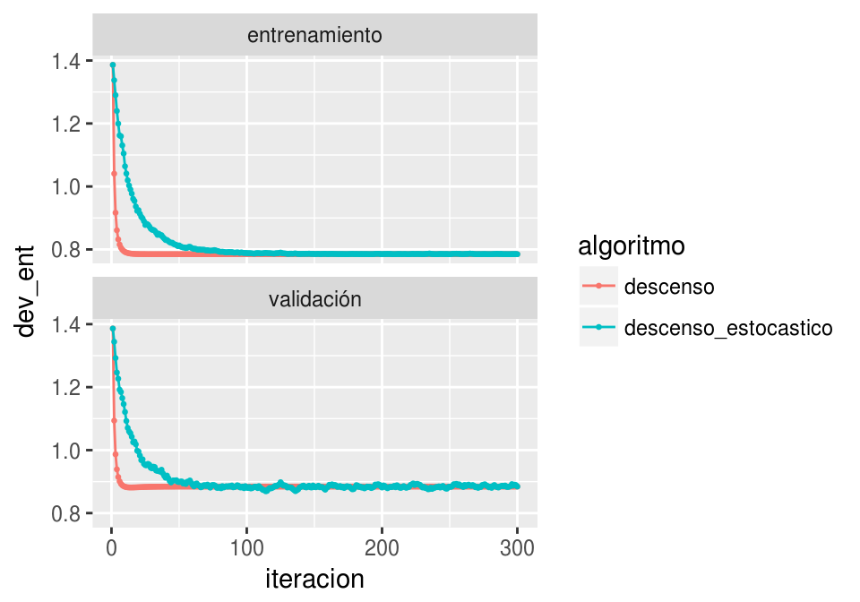
8.4 Escogiendo la tasa de aprendizaje
Para escoger la tasa, monitoreamos las curvas de error de entrenamiento y de validación. Si la tasa es muy grande, habrá oscilaciones grandes y muchas veces incrementos grandes en la función objectivo (error de entrenamiento). Algunas oscilaciones suaves no tienen problema -es la naturaleza estocástica del algoritmo. Si la tasa es muy baja, el aprendizaje es lento y podemos quedarnos en un valor demasiado alto.
Conviene monitorear las primeras iteraciones y escoger una tasa más alta que la mejor que tengamos acutalmente, pero no tan alta que cause inestabilidad. Una gráfica como la siguiente es útil. En este ejemplo, incluso podríamos detenernos antes para evitar el sobreajuste de la última parte de las iteraciones:
ggplot(filter(dat_dev, algoritmo=='descenso_estocastico'),
aes(x=iteracion, y=dev_ent, colour=tipo)) + geom_line() + geom_point()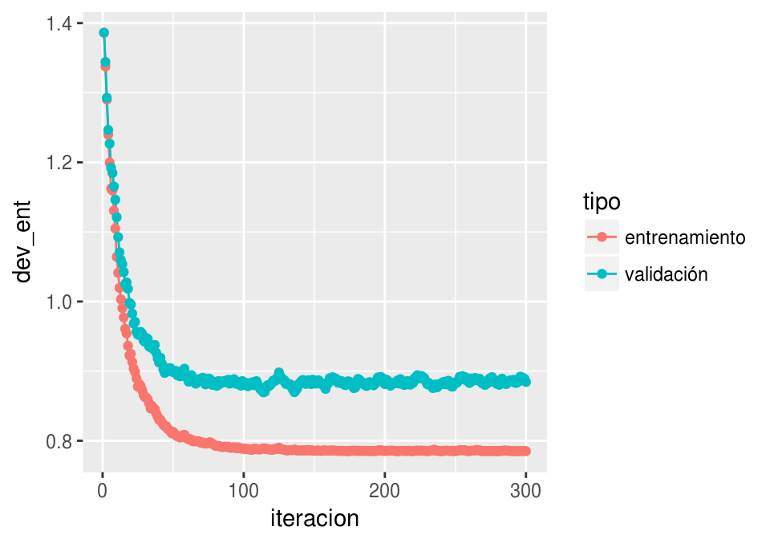
Por ejemplo: tasa demasiado alta:
iter_estocastico <- descenso_estocástico(20, rep(0,4), 0.95, minilotes) %>%
data.frame %>% rename(beta_0 = X1, beta_1 = X2)
dev_ent <- devianza_calc(x = as.matrix(dat_ent[,c('x_1','x_2','x_3'), drop =FALSE]),
y=dat_ent$g)
dev_valid <- devianza_calc(x = as.matrix(dat_valid[,c('x_1','x_2','x_3'), drop =FALSE]),
y=dat_valid$g)
dat_dev <- data_frame(iteracion = 1:nrow(iter_estocastico)) %>%
mutate(entrena = apply(iter_estocastico, 1, dev_ent),
validacion = apply(iter_estocastico, 1, dev_valid)) %>%
gather(tipo, devianza, entrena:validacion)
ggplot(dat_dev,
aes(x=iteracion, y=devianza, colour=tipo)) + geom_line() + geom_point()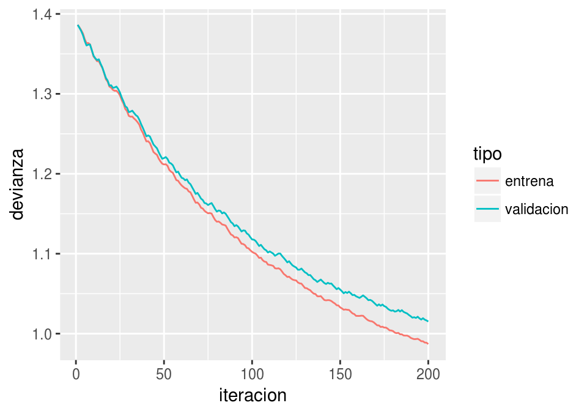
Tasa demasiado chica ( o hacer más iteraciones):
iter_estocastico <- descenso_estocástico(20, rep(0,4), 0.01, minilotes) %>%
data.frame %>% rename(beta_0 = X1, beta_1 = X2)
dev_ent <- devianza_calc(x = as.matrix(dat_ent[,c('x_1','x_2','x_3'), drop =FALSE]),
y=dat_ent$g)
dev_valid <- devianza_calc(x = as.matrix(dat_valid[,c('x_1','x_2','x_3'), drop =FALSE]),
y=dat_valid$g)
dat_dev <- data_frame(iteracion = 1:nrow(iter_estocastico)) %>%
mutate(entrena = apply(iter_estocastico, 1, dev_ent),
validacion = apply(iter_estocastico, 1, dev_valid)) %>%
gather(tipo, devianza, entrena:validacion)
ggplot(dat_dev,
aes(x=iteracion, y=devianza, colour=tipo)) + geom_line() 
- Para redes neuronales, es importante explorar distintas tasas de aprendizaje, aún cuando no parezca haber oscilaciones grandes o convergencia muy lenta. En algunos casos, si la tasa es demasiado grande, puede ser que el algoritmo llegue a lugares con gradientes cercanos a cero (por ejemplo, por activaciones demasiado grandes) y tenga dificultad para moverse.
8.5 Mejoras al algoritmo de descenso estocástico.
8.5.1 Decaimiento de tasa de aprendizaje
Hay muchos algoritmos derivados de descenso estocástico. La primera mejora consiste en reducir gradualmente la tasa de aprendizaje para aprender rápido al principio, pero filtrar el ruido de la estimación de minilotes más adelante en las iteraciones y permitir que el algoritmo se asiente en un mínimo.
descenso_estocástico <- function(n_epocas, z_0, eta, minilotes, decaimiento = 0.0){
#minilotes es una lista
m <- length(minilotes)
z <- matrix(0, m*n_epocas, length(z_0))
z[1, ] <- z_0
for(i in 1:(m*n_epocas-1)){
k <- i %% m + 1
if(i %% m == 0){
#comenzar nueva época y reordenar minilotes al azar
minilotes <- minilotes[sample(1:m, m)]
}
h_deriv <- grad_calc(minilotes[[k]]$x, minilotes[[k]]$y)
z[i+1, ] <- z[i, ] - eta * h_deriv(z[i, ])
eta <- eta*(1/(1+decaimiento*i))
}
z
}Y ahora vemos qué pasa con decaimiento:
iter_estocastico <- descenso_estocástico(20, c(0,0, 0, 0), 0.3,
minilotes, decaimiento = 0.0002) %>%
data.frame %>% rename(beta_0 = X1, beta_1 = X2, beta_2 = X3, beta_3 = X4)
dev_ent <- devianza_calc(x = as.matrix(dat_ent[,c('x_1','x_2','x_3'), drop =FALSE]),
y=dat_ent$g)
dev_valid <- devianza_calc(x = as.matrix(dat_valid[,c('x_1','x_2','x_3'), drop =FALSE]),
y=dat_valid$g)
dat_dev <- data_frame(iteracion = 1:nrow(iter_estocastico)) %>%
mutate(entrena = apply(iter_estocastico, 1, dev_ent),
validacion = apply(iter_estocastico, 1, dev_valid)) %>%
gather(tipo, devianza, entrena:validacion)
ggplot(filter(dat_dev, iteracion>1),
aes(x=iteracion, y=devianza, colour=tipo)) + geom_line() + geom_point()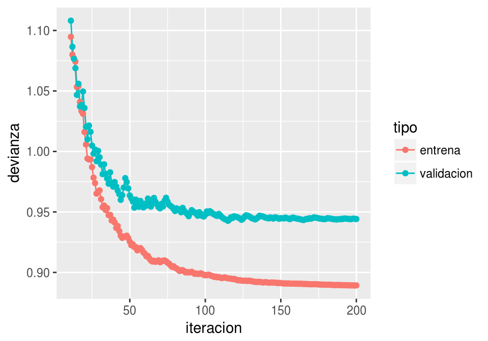
ggplot(iteraciones_descenso, aes(x=beta_1, y=beta_2)) + geom_path() +
geom_point() +
geom_path(data = iter_estocastico, colour ='red', alpha=0.5) +
geom_point(data = iter_estocastico, colour ='red', alpha=0.5)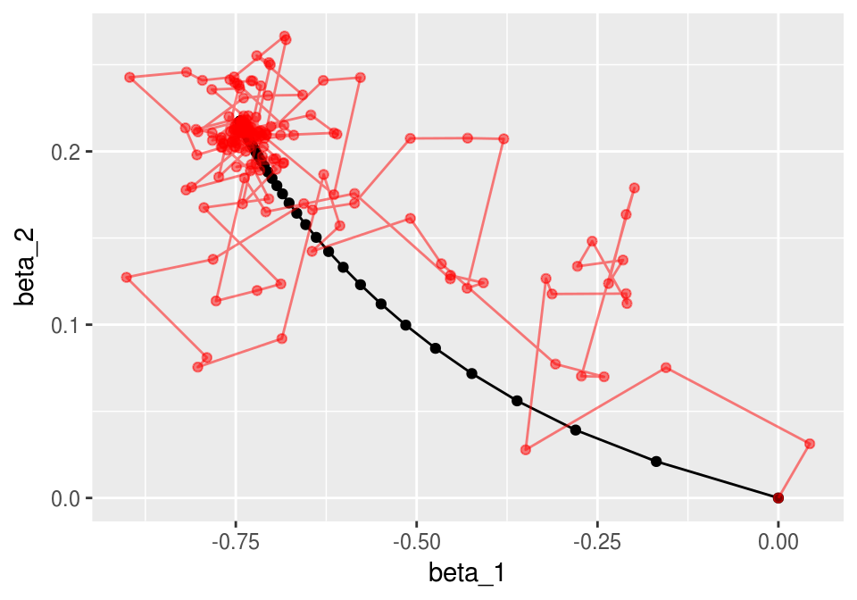
La tasa de aprendizaje es uno de los parámetros en redes neuronales más importantes de afinar. Generalmente se empieza con una tasa de aprendizaje con un valor bajo (0.01, o. 0.1), pero es necesario experimentar.
- Un valor muy alto puede provocar oscilaciones muy fuertes en la pérdida
- Un valor alto también puede provocar que el algoritmo se detenga en lugar con función pérdida alta (sobreajusta rápidamente).
- Un valor demasiado bajo produce convergencia lenta.
8.5.2 Momento
También es posible utilizar una idea adicional que acelera la convergencia. La idea es que muchas veces la aleatoriedad del algoritmo puede producir iteraciones en direcciones que no son tan buenas (pues la estimación del gradiente es mala). Esto es parte del algoritmo. Sin embargo, si en varias iteraciones hemos observado movimientos en direcciones consistentes, quizá deberíamos movernos en esas direcciones consistentes, y reducir el peso de la dirección del minilote (que nos puede llevar en una dirección mala). El resultado es un suavizamiento de las curvas de aprendizaje.
Esto es similar al movimiento de una canica en una superficie: la dirección de su movimiento está dada en parte por la dirección de descenso (el gradiente) y en parte la velocidad actual de la canica. La canica se mueve en un promedio de estas dos direcciones
Descenso estocástico con momento Separamos al azar los datos de entrenamiento en \(n\) minilotes de tamaño \(m\).
- Para épocas \(e =1,2,\ldots, n_e\)
- Calcular el gradiente sobre el minilote y hacer actualización, sucesivamente para cada uno de los minilotes \(k=1,2,\ldots, n/m\): \[\beta_{i+1} = \beta_{i} + v,\] \[v= \alpha v - \eta\sum_{j=1}^m \nabla D^{(k)}_j\] donde \(D^{(k)}_j (\beta_i)\) es la devianza para el \(j\)-ésimo caso del minilote \(k\). A \(v\) se llama la velocidad
- Repetir para la siguiente época
descenso_estocástico <- function(n_epocas, z_0, eta, minilotes,
momento = 0.0, decaimiento = 0.0){
#minilotes es una lista
m <- length(minilotes)
z <- matrix(0, m*n_epocas, length(z_0))
z[1, ] <- z_0
v <- 0
for(i in 1:(m*n_epocas-1)){
k <- i %% m + 1
if(i %% m == 0){
#comenzar nueva época y reordenar minilotes al azar
minilotes <- minilotes[sample(1:m, m)]
v <- 0
}
h_deriv <- grad_calc(minilotes[[k]]$x, minilotes[[k]]$y)
z[i+1, ] <- z[i, ] + v
v <- momento*v - eta * h_deriv(z[i, ])
eta <- eta*(1/(1+decaimiento*i))
}
z
}Y ahora vemos que usando momento el algoritmo es más parecido a descenso en gradiente usual (pues tenemos cierta memoria de direcciones anteriores de descenso):
set.seed(231)
iter_estocastico <- descenso_estocástico(20, c(0,0, 0, 0), 0.2, minilotes, momento = 0.7, decaimiento = 0.001) %>%
data.frame %>% rename(beta_0 = X1, beta_1 = X2, beta_2=X3, beta_3=X4)
dev_ent <- devianza_calc(x = as.matrix(dat_ent[,c('x_1','x_2','x_3'), drop =FALSE]),
y=dat_ent$g)
dev_valid <- devianza_calc(x = as.matrix(dat_valid[,c('x_1','x_2','x_3'), drop =FALSE]),
y=dat_valid$g)
dat_dev <- data_frame(iteracion = 1:nrow(iter_estocastico)) %>%
mutate(entrena = apply(iter_estocastico, 1, dev_ent),
validacion = apply(iter_estocastico, 1, dev_valid)) %>%
gather(tipo, devianza, entrena:validacion)
ggplot(filter(dat_dev, iteracion > 1),
aes(x=iteracion, y=devianza, colour=tipo)) + geom_line() + geom_point()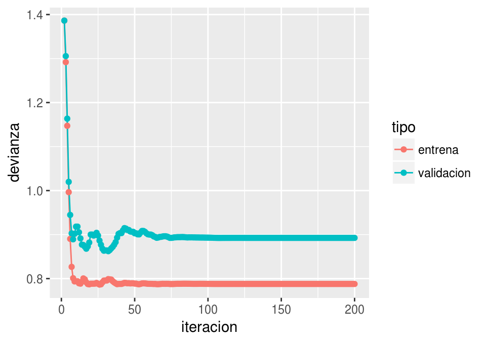
ggplot(iteraciones_descenso, aes(x=beta_1, y=beta_2)) + geom_path() +
geom_point() +
geom_path(data = iter_estocastico, colour ='red', alpha=0.5) +
geom_point(data = iter_estocastico, colour ='red', alpha=0.5)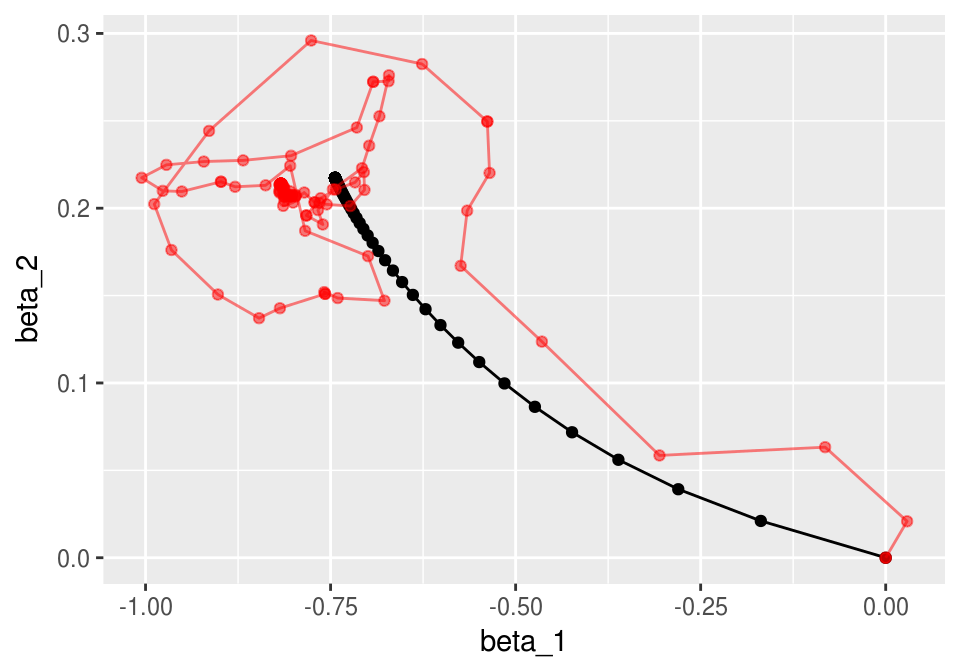
Nótese cómo llegamos más rápido a una buena solución (comparado con el ejemplo sin momento). Adicionalmente, error de entrenamiento y validación lucen más suaves, producto de promediar velocidades a lo largo de iteraciones.
Valores típicos para momento son 0,0.5,0.9 o 0.99.
8.5.3 Otras variaciones
Otras variaciones incluyen usar una tasa adaptativa de aprendizaje por cada parámetro (algoritmos adagrad, rmsprop, adam y adamax), o actualizaciones un poco diferentes (nesterov).
Los más comunes son descenso estocástico, descenso estocástico con momento, rmsprop y adam (Capítulo 8 del Deep Learning Book, (Goodfellow, Bengio, and Courville 2016)).
8.6 Ajuste de redes con descenso estocástico
if(Sys.info()['nodename'] == 'vainilla.local'){
# esto es por mi instalación particular de tensorflow - típicamente
# no es necesario que corras esta línea.
Sys.setenv(TENSORFLOW_PYTHON="/usr/local/bin/python")
}
library(keras)set.seed(21321)
x_ent <- as.matrix(dat_ent[,c('x_1','x_2','x_3')])
x_valid <- as.matrix(dat_valid[,c('x_1','x_2','x_3')])
y_ent <- dat_ent$g
y_valid <- dat_valid$gEmpezamos con regresión logística (sin capas ocultas), que se escribe y ajusta como sigue:
modelo <- keras_model_sequential()
modelo %>%
layer_dense(units = 1,
activation = 'sigmoid',
input_shape = c(3))
modelo %>% compile(loss = 'binary_crossentropy',
optimizer = optimizer_sgd(lr = 0.2, momentum = 0,
decay = 0),
metrics = c('accuracy')
)
history <- modelo %>%
fit(x_ent, y_ent,
epochs = 50, batch_size = 64,
verbose = 0,
validation_data = list(x_valid, y_valid))Podemos ver el progreso del algoritmo por época
aprendizaje <- as.data.frame(history)
ggplot(aprendizaje,
aes(x=epoch, y=value, colour=data, group=data)) +
facet_wrap(~metric, ncol = 1) + geom_line() + geom_point(size = 0.5)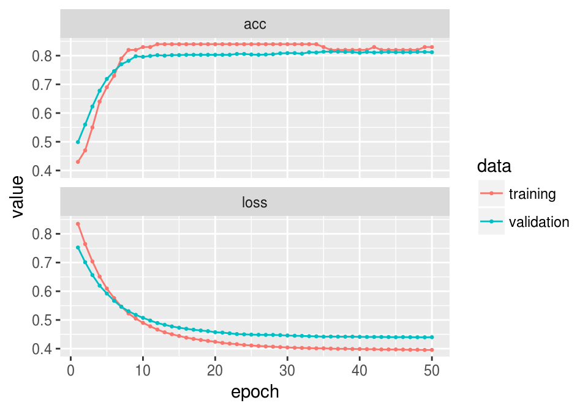
Ver los pesos:
get_weights(modelo)## [[1]]
## [,1]
## [1,] -0.6399756
## [2,] 0.2533897
## [3,] 0.3645367
##
## [[2]]
## [1] 1.659095Y verificamos que concuerda con la salida de glm:
mod_logistico <- glm(g ~ x_1 + x_2+ x_3, data = dat_ent, family = 'binomial')
coef(mod_logistico)## (Intercept) x_1 x_2 x_3
## 1.8082362 -0.7439627 0.2172971 0.37119730.5*mod_logistico$deviance/nrow(dat_ent)## [1] 0.3925183Ejemplo
Ahora hacemos algunos ejemplos para redes totalmente conexas. Usaremos los datos de reconocimiento de dígitos.
library(readr)
digitos_entrena <- read_csv('./datos/zip-train.csv')
digitos_prueba <- read_csv('./datos/zip-test.csv')
names(digitos_entrena)[1] <- 'digito'
names(digitos_entrena)[2:257] <- paste0('pixel_', 1:256)
names(digitos_prueba)[1] <- 'digito'
names(digitos_prueba)[2:257] <- paste0('pixel_', 1:256)
dim(digitos_entrena)## [1] 7291 257table(digitos_entrena$digito)##
## 0 1 2 3 4 5 6 7 8 9
## 1194 1005 731 658 652 556 664 645 542 644Ponemos el rango entre [0,2] (pixeles positivos)
x_train <- digitos_entrena %>% select(contains('pixel')) %>% as.matrix + 1
x_train <- x_train
x_test <- digitos_prueba %>% select(contains('pixel')) %>% as.matrix + 1
x_test <- x_testUsamos codificación dummy:
#dim(x_train) <- c(nrow(x_train), 16, 16, 1)
#dim(x_test) <- c(nrow(x_test), 16, 16, 1)
y_train <- to_categorical(digitos_entrena$digito)
y_test <- to_categorical(digitos_prueba$digito)
head(y_train)## [,1] [,2] [,3] [,4] [,5] [,6] [,7] [,8] [,9] [,10]
## [1,] 0 0 0 0 0 0 1 0 0 0
## [2,] 0 0 0 0 0 1 0 0 0 0
## [3,] 0 0 0 0 1 0 0 0 0 0
## [4,] 0 0 0 0 0 0 0 1 0 0
## [5,] 0 0 0 1 0 0 0 0 0 0
## [6,] 0 0 0 0 0 0 1 0 0 0Y definimos un modelo con 2 capas de 200 unidades cada una y regularización L2. Nótese que usamos softmax en la última capa, que es la función (ver parte de regresión multinomial) cuya salida \(k\) está dada por \[p_k = \frac{exp(z_k)}{\sum_j exp(z_j)}\] donde \(z=(z_1,\ldots, z_K)\) (estas son las combinaciones lineales de las unidades de la capa anterior).
modelo_tc <- keras_model_sequential()
modelo_tc %>%
layer_dense(units = 200, activation = 'sigmoid',
kernel_regularizer = regularizer_l2(l = 1e-6), input_shape=256) %>%
layer_dense(units = 200, activation = 'sigmoid',
kernel_regularizer = regularizer_l2(l = 1e-6)) %>%
layer_dense(units = 10, activation = 'softmax',
kernel_regularizer = regularizer_l2(l = 1e-6))modelo_tc %>% compile(
loss = 'categorical_crossentropy',
optimizer = optimizer_sgd(lr = 0.5, momentum = 0.0, decay = 1e-6),
metrics = c('accuracy' ,'categorical_crossentropy')
)
history <- modelo_tc %>% fit(
x_train, y_train,
epochs = 100, batch_size = 256,
verbose = 0,
validation_data = list(x_test, y_test)
)
score <- modelo_tc %>% evaluate(x_test, y_test)
score## $loss
## [1] 3.136372
##
## $acc
## [1] 0.7648231
##
## $categorical_crossentropy
## [1] 3.1354Podemos también intentar con el ejemplo de spam:
library(readr)
library(tidyr)
library(dplyr)
spam_entrena <- read_csv('./datos/spam-entrena.csv') #%>% sample_n(2000)
spam_prueba <- read_csv('./datos/spam-prueba.csv')
set.seed(293)
x_ent <- spam_entrena %>% select(-X1, -spam) %>% as.matrix
x_ent_s <- scale(x_ent)
x_valid <- spam_prueba %>% select(-X1, -spam) %>% as.matrix
x_valid_s <- x_valid %>%
scale(center = attr(x_ent_s, 'scaled:center'), scale = attr(x_ent_s, 'scaled:scale'))
y_ent <- spam_entrena$spam
y_valid <- spam_prueba$spamEn este caso, intentemos una capa oculta:
modelo_tc <- keras_model_sequential()
modelo_tc %>%
layer_dense(units = 200, activation = 'sigmoid',
kernel_regularizer = regularizer_l2(l = 1e-5), input_shape=57) %>%
layer_dense(units = 1, activation = 'sigmoid')modelo_tc %>% compile(
loss = 'binary_crossentropy',
optimizer = optimizer_sgd(lr = 0.5, momentum = 0.5),
metrics = c('accuracy', 'binary_crossentropy')
)
history <- modelo_tc %>% fit(
x_ent_s, y_ent,
epochs = 200, batch_size = 256, verbose = 0,
validation_data = list(x_valid_s, y_valid)
)
score <- modelo_tc %>% evaluate(x_valid_s, y_valid)
tab_confusion <- table(modelo_tc %>% predict_classes(x_valid_s),y_valid)
tab_confusion## y_valid
## 0 1
## 0 892 55
## 1 35 552prop.table(tab_confusion, 2)## y_valid
## 0 1
## 0 0.96224380 0.09060956
## 1 0.03775620 0.909390448.7 Activaciones relu
Recientemente se ha descubierto (en gran parte empíricamente) que hay una unidad más conveniente para las activaciones de las unidades, en lugar de la función sigmoide
Activaciones lineales rectificadas (relu)
La función relu es \[\begin{equation} h(z) = \begin{cases} z &\, z>0\\ 0 &\, z<=0 \end{cases} \end{equation}\] Estas generalmente sustituyen a las unidades sigmoidales en capas ocultash_relu <- function(z) ifelse(z > 0, z, 0)
h_logistica <- function(z) 4/(1+exp(-z)) #mult por 4 para comparar más fácilmente
curve(h_relu, -5,5)
curve(h_logistica, add=T, col='red')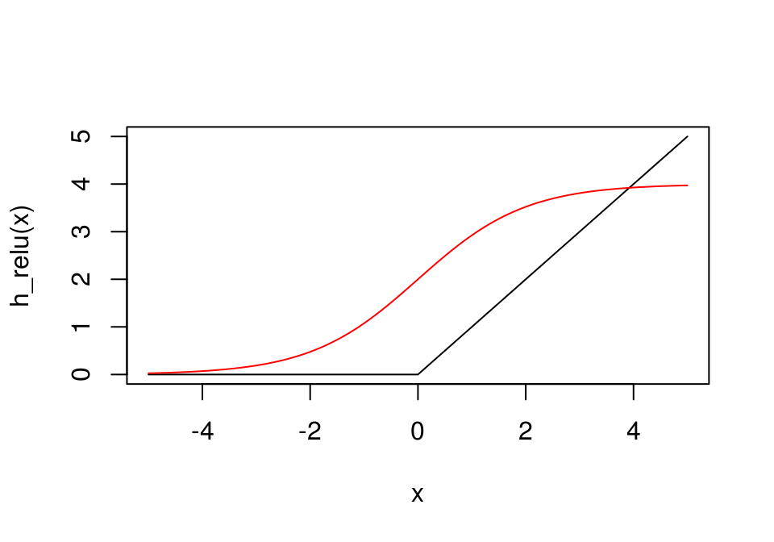
La razón del exito de estas activaciones no está del todo clara, aunque generalmente se cita el hecho de que una unidad saturada (valores de entrada muy positivos o muy negativos) es problemática en optimización, y las unidades tienen menos ese problema pues no se saturan para valores positivos.
Pregunta: ¿cómo cambiaría el algoritmo de feed-forward con estas unidades? ¿el de back-prop?
Ejemplo
Veamos el mismo modelo de dos capas de arriba, pero con activaciones relu:
modelo_tc <- keras_model_sequential()
modelo_tc %>%
layer_dense(units = 200, activation = 'relu',
kernel_regularizer = regularizer_l2(l = 1e-3), input_shape=256) %>%
layer_dense(units = 200, activation = 'relu',
kernel_regularizer = regularizer_l2(l = 1e-3)) %>%
layer_dense(units = 10, activation = 'softmax',
kernel_regularizer = regularizer_l2(l = 1e-3))modelo_tc %>% compile(
loss = 'categorical_crossentropy',
optimizer = optimizer_sgd(lr = 0.3, momentum = 0.0, decay = 0),
metrics = c('accuracy', 'categorical_crossentropy')
)
history <- modelo_tc %>% fit(
x_train, y_train,
epochs = 200, batch_size = 256,
verbose = 0,
validation_data = list(x_test, y_test)
)
score <- modelo_tc %>% evaluate(x_test, y_test)
score## $loss
## [1] 14.05553
##
## $acc
## [1] 0.1315396
##
## $categorical_crossentropy
## [1] 13.997938.8 Dropout para regularización
Un método más nuevo y exitoso para regularizar es el dropout. Consiste en perturbar la red en cada pasada de entrenamiento de minibatch (feed-forward y backprop), eliminando al azar algunas de las unidades de cada capa.
El objeto es que al introducir ruido en el proceso de entrenamiento evitamos sobreajuste, pues en cada paso de la iteración estamos limitando el número de unidades que la red puede usar para ajustar las respuestas. Dropout entonces busca una reducción en el sobreajuste que sea más provechosa que el consecuente aumento en el sesgo.
Dropout
- En cada iteración (minibatch), seleccionamos con cierta probablidad \(p\) eliminar cada una de las unidades (independientemente en cada capa, y posiblemente con distintas \(p\) en cada capa), es decir, hacemos su salida igual a 0. Hacemos forward-feed y back-propagation poniendo en 0 las unidades eliminadas.
- Escalar pesos: para predecir (prueba), usamos todas las unidades. Si una unidad tiene peso \(\theta\) en una capa después de entrenar, y la probablidad de que esa capa no se haya hecho 0 es \(1-p\), entonces usamos \((1-p)\theta\) como peso para hacer predicciones.
- Si hacemos dropout de la capa de entrada, generalmente se usan valores chicos alrededor de \(0.2\). En capas intermedias se usan generalmente valores más grandes alrededor de \(0.5\).
Podemos hacer dropout de la capa de entrada. En este caso, estamos evitando que el modelo dependa fuertemente de variables individuales. Por ejemplo, en procesamiento de imágenes, no queremos que por sobreajuste algunas predicciones estén ligadas fuertemente a un solo pixel (aún cuando en entrenamiento puede ser que un pixel separe bien los casos que nos interesa clasificar).
Ejemplo: dropout y regularización
Consideremos el problema de separar 9 y 3 del resto de dígitos zip. Queremos comparar el desempeño de una red sin y con dropout (tanto de entradas como de capa oculta) y entender parcialmente cómo se comportan los pesos aprendidos:
set.seed(29123)
entrena_3 <- digitos_entrena %>% sample_n(nrow(digitos_entrena)) %>%
sample_n(3000)
x_train_3 <- entrena_3 %>% select(-digito) %>% as.matrix + 1
y_train_3 <- (entrena_3$digito %in% c(3,9)) %>% as.numeric
set.seed(12)
modelo_sin_reg <- keras_model_sequential()
modelo_sin_reg %>%
layer_dense(units = 30, activation = 'relu', input_shape = 256) %>%
layer_dense(units = 1, activation = 'sigmoid')
set.seed(12)
modelo_dropout <- keras_model_sequential()
modelo_dropout %>%
layer_reshape(input_shape=256, target_shape=256) %>%
layer_dropout(0.3) %>%
layer_dense(units = 30, activation = 'relu', input_shape = 256) %>%
layer_dropout(0.3) %>%
layer_dense(units = 1, activation = 'sigmoid')El modelo sin regularización sobreajusta (nótese que el error de validación comienza a crecer considerablemente muy pronto, hay un margen grande entre entrenamiento y validación, y la pérdida de entrenamiento es cercana a 0):
modelo_sin_reg %>% compile(loss = 'binary_crossentropy', optimizer = optimizer_sgd(lr = 0.3),
metrics = c('accuracy')
)
history_1 <- modelo_sin_reg %>% fit(x_train_3/2, y_train_3, verbose=0,
epochs = 500, batch_size = 256, validation_split = 0.2
)
hist_1 <- as.data.frame(history_1)
ggplot(hist_1, aes(x=epoch, y=value, colour=data)) + geom_line() +
facet_wrap(~metric, scales = 'free', ncol=1)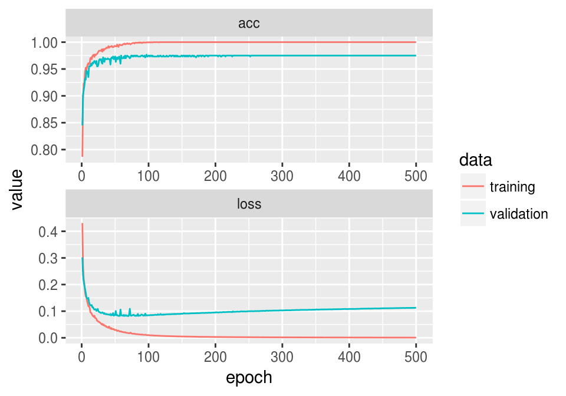
Y parecen ruidosas las unidades que aprendió en la capa oculta (algunas no aprendieron o aprendieron cosas irrelevantes). En la siguiente imagen, cada pixel es un peso. Cada imagen agrupa los pesos de una unidad, y ordenamos los pesos según la variable de entrada (pixel) al que se multiplican.
graf_pesos <- function(pesos, mostrar_facets=FALSE){
pesos_df <- as_tibble(pesos) %>%
mutate(pixel = 1:256) %>%
mutate(x=(pixel -1) %% 16, y = (pixel-1)%/% 16) %>%
gather(unidad, valor, -pixel,-x,-y) %>%
mutate(unidad=as.integer(unidad))
gplot <- ggplot(pesos_df, aes(x=x,y=-y, fill=valor)) + geom_tile() +
facet_wrap(~unidad)+scale_fill_gradient2(low = "black", mid='gray80',
high = "white") + coord_fixed()
if(!mostrar_facets){
gplot <- gplot + theme(strip.background = element_blank(), strip.text = element_blank())
}
gplot
}
pesos <- get_weights(modelo_sin_reg)[[1]]
colnames(pesos) <- 1:ncol(pesos)
graf_pesos(pesos)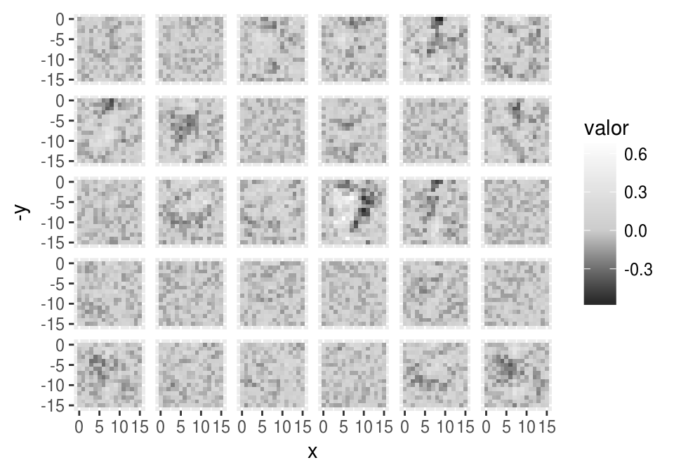
Ahora ajustamos el modelo con dropout:
modelo_dropout %>% compile(loss = 'binary_crossentropy',
optimizer = optimizer_sgd(lr = 0.5),
metrics = c('accuracy')
)
history_2 <- modelo_dropout %>% fit(x_train_3/2, y_train_3, verbose=1,
epochs = 500, batch_size = 256, validation_split = 0.5
)
hist_2 <- as.data.frame(history_2)
ggplot(hist_2, aes(x=epoch, y=value, colour=data)) + geom_line() +
facet_wrap(~metric, scales = 'free')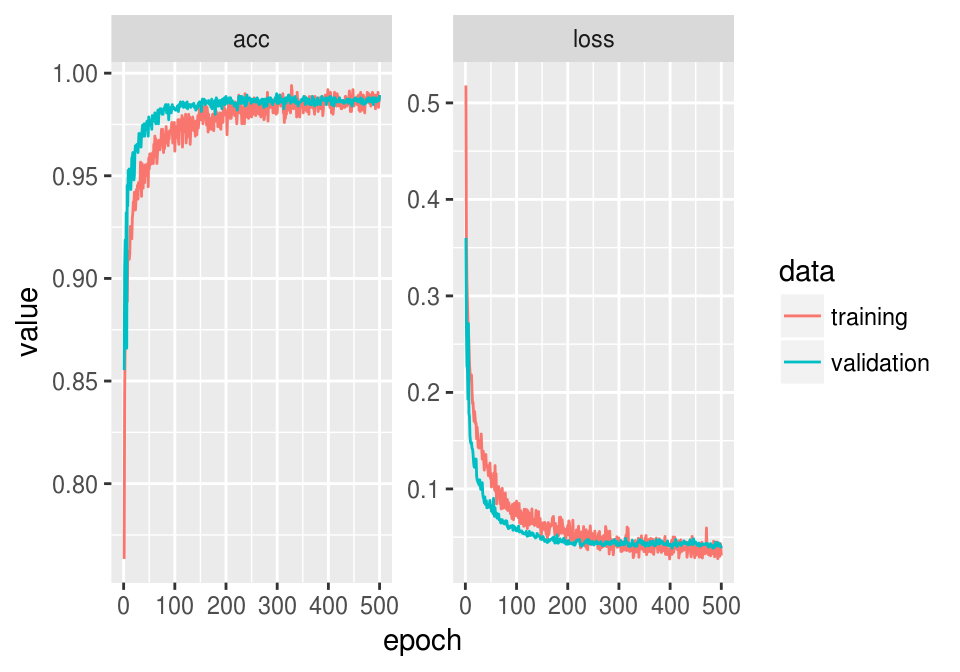
El desempeño es mejor, y parecen ser más útiles los patrones que aprendió el capa oculta:
pesos <- get_weights(modelo_dropout)[[1]]
colnames(pesos) <- 1:ncol(pesos)
graf_pesos(pesos) 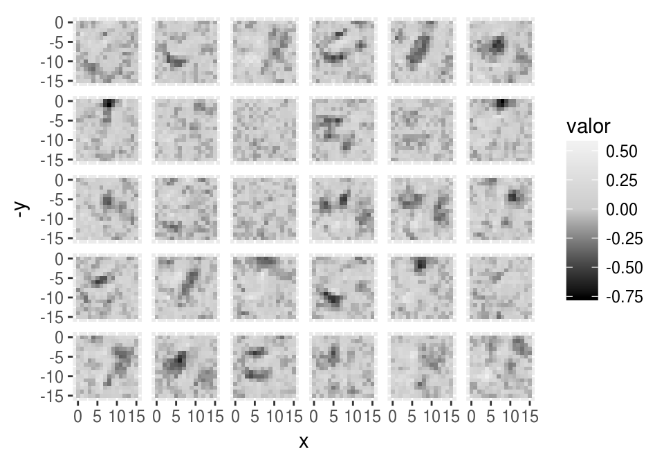
get_weights(modelo_dropout)[[3]]## [,1]
## [1,] -1.41414356
## [2,] 0.94843191
## [3,] -1.30634797
## [4,] -1.53686595
## [5,] -1.51596522
## [6,] 1.05315864
## [7,] 1.13238513
## [8,] 1.05909264
## [9,] 0.32852486
## [10,] 0.48622549
## [11,] 1.43448853
## [12,] -1.36008871
## [13,] -1.43801475
## [14,] 1.30476797
## [15,] 0.82264280
## [16,] -1.20850873
## [17,] -1.49833679
## [18,] -1.37528884
## [19,] 1.02160072
## [20,] 0.12649795
## [21,] 1.41688335
## [22,] 0.46221861
## [23,] 0.34277269
## [24,] 1.08954716
## [25,] 1.19508266
## [26,] -1.83270216
## [27,] -1.06645358
## [28,] -1.89068592
## [29,] 1.04212523
## [30,] 0.06395533¿Cuáles de estas unidades tienen peso positivo y negativo en la capa final?
pesos_capa_f <- get_weights(modelo_dropout)[[3]]
graf_pesos(pesos[, pesos_capa_f > 0.5], mostrar_facets = TRUE)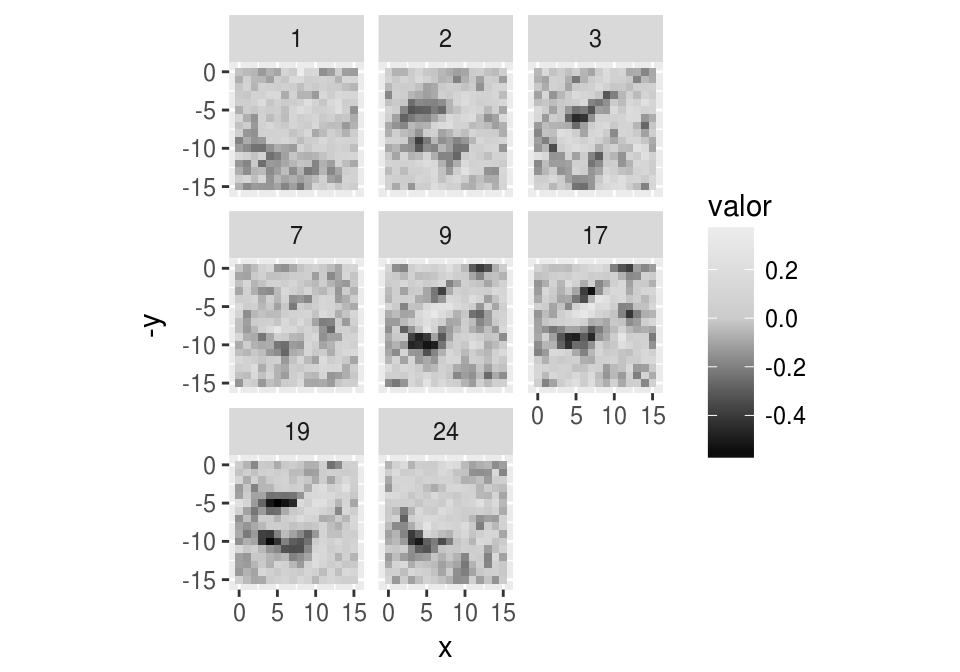
graf_pesos(pesos[, pesos_capa_f < -1.5], mostrar_facets = TRUE)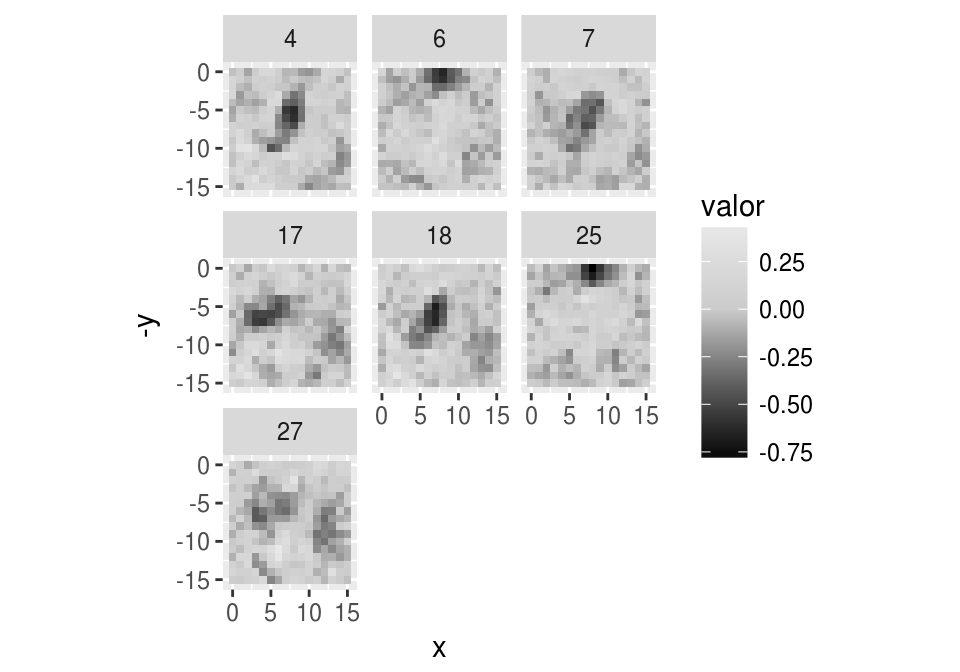
Comentarios adicionales
Algunas maneras en que podemos pensar en la regularización de dropout:
Dropout busca que cada unidad calcule algo importante por sí sola, y dependa menos de otras unidades para hacer algo útil. Algunas unidades y pesos pueden acoplarse fuertemente (y de manera compleja) para hacer las predicciones. Si estas unidades aprendieron ese acoplamento demasiado fuerte para el conjunto de entrenamiento, entonces puede ser nuevos datos, con perturbaciones, puedan producir predicciones malas (mala generalización). Con dropout buscamos que la unidades capturen información útil en general, no necesariamente en acoplamiento fuerte con otras unidades.
Podemos pensar que en cada pasada de minibatch, escogemos una arquitectura diferente, y entrenamos. El resultado final será entonces es un tipo de promedio de todas esas arquitecturas que probamos. Este promedio reduce varianza de las salidas de las unidades.
El paso de escalamiento es importante para el funcionamiento correcto del método. La idea intuitiva es que el peso de una unidad es 0 con probabilidad \(p\) y \(\theta\) con probabilidad \(1-p\). Tomamos el valor esperado como peso para la red completa, que es \(p0+(1-p)\theta\). Ver (Srivastava et al. 2014)
Ejemplo
Experimenta en este ejemplo con distintos valores de dropout, y verifica intuitivamente sus efectos de regularización (ve las curvas de aprendizaje).
modelo_tc <- keras_model_sequential()
modelo_tc %>%
layer_reshape(input_shape=256, target_shape=256) %>%
layer_dropout(rate=0.2) %>%
layer_dense(units = 200, activation = 'relu') %>%
layer_dropout(rate = 0.5) %>%
layer_dense(units = 200, activation = 'relu') %>%
layer_dropout(rate = 0.5) %>%
layer_dense(units = 10, activation = 'softmax',
kernel_regularizer = regularizer_l2(l = 1e-4))modelo_tc %>% compile(
loss = 'categorical_crossentropy',
optimizer = optimizer_sgd(lr = 0.3, momentum = 0.5, decay = 0.0001),
metrics = c('accuracy', 'categorical_crossentropy')
)
history <- modelo_tc %>% fit(
x_train, y_train,
epochs = 100, batch_size = 256,
validation_data = list(x_test, y_test)
)
score <- modelo_tc %>% evaluate(x_test, y_test)
score## $loss
## [1] 14.53103
##
## $acc
## [1] 0.09865471
##
## $categorical_crossentropy
## [1] 14.52797References
Goodfellow, Ian, Yoshua Bengio, and Aaron Courville. 2016. Deep Learning. MIT Press.
Srivastava, Nitish, Geoffrey Hinton, Alex Krizhevsky, Ilya Sutskever, and Ruslan Salakhutdinov. 2014. “Dropout: A Simple Way to Prevent Neural Networks from Overfitting.” J. Mach. Learn. Res. 15 (1). JMLR.org: 1929–58. http://dl.acm.org/citation.cfm?id=2627435.2670313.